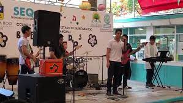

Las Actividades Paraescolares buscan preservar los espacios y actividades extra curriculares, además de contribuir en la educación integral del estudiantado en sus diversas fases que lo componen: física, psicológica, emocional y social.
A continuacion se mostrara una lista de parescolares:
Teatro
El teatro es una herramienta artística que fomenta aspectos tan importantes como la creatividad, la memoria y la autonomía. Así como mejora habilidades sociales y expresivas. Consiste en la representación frente a los espectadores de historias actuadas combinando discurso, gestualidad, escenografía y música. Cada representación teatral es una obra de teatro.
Basketball
Fomentar la adherencia de l@s jóvenes a la práctica del deporte en general y en particular al BALONCESTO. Mejorar las capacidades técnicas de l@s jugador@s. Fomentar un estilo de vida saludable entre l@s jóvenes. Desarrollar positivamente los valores educativos que tiene el BALONCESTO. El objetivo del baloncesto es marcar más puntos que el equipo contrincante, encestando el balón en el cesto contrario e impidiendo a los jugadores contrincantes encestar en la propia. Una canasta lanzada desde el tiro libre vale 1 punto.
Musica

Habituarse a escuchar música y establecer un concepto estético que les permita fundamentar y desarrollar los propios criterios interpretativos. Desarrollar la sensibilidad artística y el criterio estético como fuente de formación y enriquecimiento personal. Analizar y valorar la calidad de la música.
Futbol
El objetivo general consiste en desarrollar y perfeccionar las habilidades y destrezas motrices básicas, así como aprender los fundamentos técnicos, tácticos y reglamentarios del fútbol, sin olvidar aspectos físicos.
Voleibol
Aprender y/o mejorar la acción del remate. Comprender los principios tácticos del voleibol y su aplicación a contextos reales de juego, tanto en ataque como en defensa. Planificar y organizar calentamientos generales y específicos. Mejorar la comunicación, colaboración y cooperación entre compañeros.
Banda De Guerra
Son funciones de los escoltas privados el acompañamiento, defensa y protección de personas determinadas, o de grupos concretos de personas, impidiendo que sean objeto de agresiones o actos delictivos.